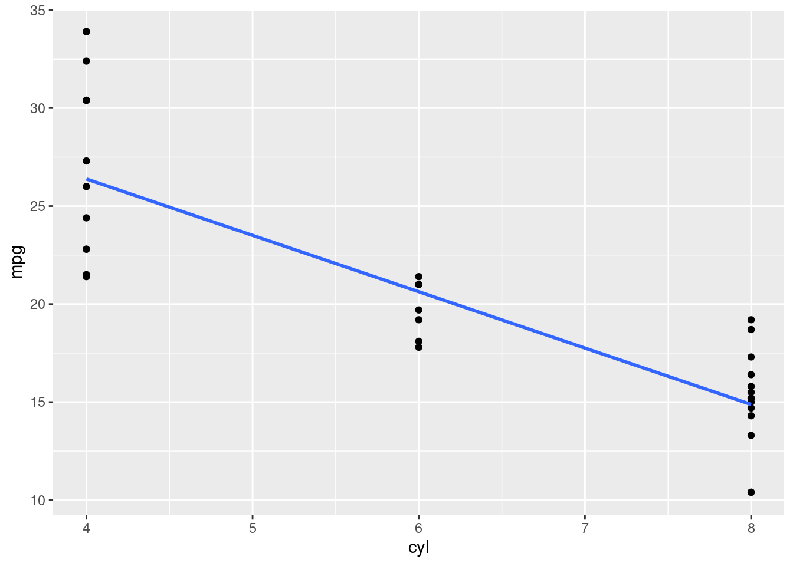
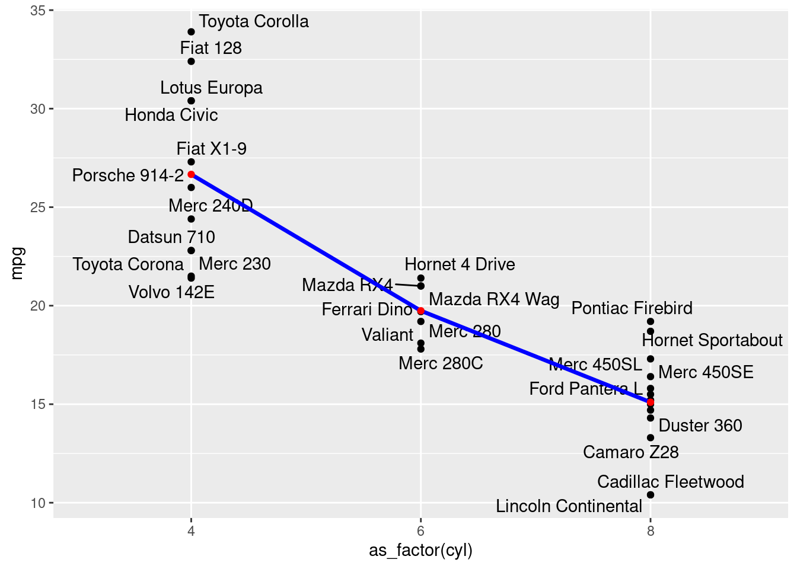

library(tidyverse)
library(janitor)
library(nortest)
# library(gt)
library(DataExplorer)
# library(plotly)
# library(kableExtra)
library(ggrepel)
library (plotly)
# library(factoextra)Regressão Linear
Base de Dados
# Selecionar variáveis quantitativas
df <- mtcars |>
rownames_to_column(var = "name")
df name mpg cyl disp hp drat wt qsec vs am gear carb
1 Mazda RX4 21.0 6 160.0 110 3.90 2.620 16.46 0 1 4 4
2 Mazda RX4 Wag 21.0 6 160.0 110 3.90 2.875 17.02 0 1 4 4
3 Datsun 710 22.8 4 108.0 93 3.85 2.320 18.61 1 1 4 1
4 Hornet 4 Drive 21.4 6 258.0 110 3.08 3.215 19.44 1 0 3 1
5 Hornet Sportabout 18.7 8 360.0 175 3.15 3.440 17.02 0 0 3 2
6 Valiant 18.1 6 225.0 105 2.76 3.460 20.22 1 0 3 1
7 Duster 360 14.3 8 360.0 245 3.21 3.570 15.84 0 0 3 4
8 Merc 240D 24.4 4 146.7 62 3.69 3.190 20.00 1 0 4 2
9 Merc 230 22.8 4 140.8 95 3.92 3.150 22.90 1 0 4 2
10 Merc 280 19.2 6 167.6 123 3.92 3.440 18.30 1 0 4 4
11 Merc 280C 17.8 6 167.6 123 3.92 3.440 18.90 1 0 4 4
12 Merc 450SE 16.4 8 275.8 180 3.07 4.070 17.40 0 0 3 3
13 Merc 450SL 17.3 8 275.8 180 3.07 3.730 17.60 0 0 3 3
14 Merc 450SLC 15.2 8 275.8 180 3.07 3.780 18.00 0 0 3 3
15 Cadillac Fleetwood 10.4 8 472.0 205 2.93 5.250 17.98 0 0 3 4
16 Lincoln Continental 10.4 8 460.0 215 3.00 5.424 17.82 0 0 3 4
17 Chrysler Imperial 14.7 8 440.0 230 3.23 5.345 17.42 0 0 3 4
18 Fiat 128 32.4 4 78.7 66 4.08 2.200 19.47 1 1 4 1
19 Honda Civic 30.4 4 75.7 52 4.93 1.615 18.52 1 1 4 2
20 Toyota Corolla 33.9 4 71.1 65 4.22 1.835 19.90 1 1 4 1
21 Toyota Corona 21.5 4 120.1 97 3.70 2.465 20.01 1 0 3 1
22 Dodge Challenger 15.5 8 318.0 150 2.76 3.520 16.87 0 0 3 2
23 AMC Javelin 15.2 8 304.0 150 3.15 3.435 17.30 0 0 3 2
24 Camaro Z28 13.3 8 350.0 245 3.73 3.840 15.41 0 0 3 4
25 Pontiac Firebird 19.2 8 400.0 175 3.08 3.845 17.05 0 0 3 2
26 Fiat X1-9 27.3 4 79.0 66 4.08 1.935 18.90 1 1 4 1
27 Porsche 914-2 26.0 4 120.3 91 4.43 2.140 16.70 0 1 5 2
28 Lotus Europa 30.4 4 95.1 113 3.77 1.513 16.90 1 1 5 2
29 Ford Pantera L 15.8 8 351.0 264 4.22 3.170 14.50 0 1 5 4
30 Ferrari Dino 19.7 6 145.0 175 3.62 2.770 15.50 0 1 5 6
31 Maserati Bora 15.0 8 301.0 335 3.54 3.570 14.60 0 1 5 8
32 Volvo 142E 21.4 4 121.0 109 4.11 2.780 18.60 1 1 4 2Variável dependente
Iremos selecionar como variável dependente o consumo (mpg). Fazendo uma análise da natureza da variável, vendo seu histograma e sua aderência à normalidade com o teste shapiro-francia:
Visualizando a variável dependente:
df |>
ggplot(aes(x=mpg)) +
geom_histogram(binwidth = 2) Teste de Normalidade Shapiro-Francia:
# Teste de normalidade Shapiro-Francia
# p-valor <= 0.5 é não-normal, ou seja, maior a variável é normal
sf.test(df$mpg)
Shapiro-Francia normality test
data: df$mpg
W = 0.95247, p-value = 0.1495Regressão univariada
Como variável explicativa, iremos selecionar a potência (hp).
Fazendo uma análise de correlação:
# Variável explicativa escolhida = hp
cor(df$mpg, df$hp)[1] -0.7761684DataExplorer::plot_correlation(df[c("mpg", "hp")])
Correlação alta (0.78) e negativa (-), ou seja, quanto menor a potência, maior o consumo.
Visualizando as variáveis graficamente:
df |>
ggplot(aes(x = hp, y= mpg)) +
geom_point() +
geom_text_repel(aes(label = name), size = 2, color = "darkgray")
Criando um modelo linear simples:
Função: \hat{y} = \alpha + \beta \* x1
#Função lm para obter os coeficientes alpha e beta
modelo_uni <- lm(mpg ~ hp, data = df)
modelo_uni
Call:
lm(formula = mpg ~ hp, data = df)
Coefficients:
(Intercept) hp
30.09886 -0.06823 Neste caso, nosssa função ficaria:
\hat{y} = (30.09886) + [(-0.06823) * x1]
ou seja, se quisermos prever o consumo (mpg) à partir apenas da variável explicativa potencia (hp), faríamos:
(30.09886) + [(-0.06823) * hp]
Por exemplo, de acordo com nosso modelo, para um veículo com 190 de potência, teremos:
(30.09886) + [(-0.06823) * 190] (30.09886) - 12.9637 = \textbf{17.13516}
Ou seja, nosso modelo prevê um consumo de 17.13 milhas por galão se um veículo tiver 190 de potência.
Visualizando a inferência:
df |>
ggplot(aes(x = hp, y= mpg)) +
geom_point() +
geom_text_repel(aes(label = name), size = 2, color = "darkgray")+
geom_point(aes(x = 190, y = 17.13),color = "red", size = 3)
Usando a função predict().
Podemos utilizar a função predict para obter inferências do modelo criado ao invés do cálculo manual como fizemos anteriormente:
df_previsao = tibble("hp" = 190)
predict(modelo_uni, newdata = df_previsao) 1
17.13549 Coeficiente de ajuste do modelo R^2:
#Obtendo o R2
summary(modelo_uni)$r.squared[1] 0.6024373#Validando o R2, extraindo a raiz, deve bater com a correlação anterior.
sqrt(summary(modelo_uni)$r.squared)[1] 0.7761684Regressão multivariada
Adicionando outra variável explicativa (cilindros).
Visualizando as correlações (ERRADO)
A seguir, iremos analisar as correlações e criar um modelo linear de forma similar à que fizemos até aqui.
Warning
CUIDADO!!! Estamos fazendo este procedimento de forma INCORRETA para mostrar alguns pontos importantes logo adiante.
df |> select(mpg, hp, cyl) |>
DataExplorer::plot_correlation()
#fig <- plot_ly(df, x = ~hp, y = ~mpg, z = ~cyl, color = ~mpg, colors = c('darkred', 'green'), size = 1) |>
# add_markers()
#figCriando o modelo (ERRADO)
Este modelo é errado, pois a variável “cyl”, apesar de em nosso dataset estar configurada como “double” (quatitativa), ela é apenas um label para definir o tipo de cilindro é o automável, portanto é qualitativa. PNeste caso, suas proporções são:
#Frequencia absoluta:
table(df$cyl)
4 6 8
11 7 14 #Frequencia Relativa:
prop.table(table(df$cyl))
4 6 8
0.34375 0.21875 0.43750 Como na tabela df, ela está como double, a função lm(), está tratando seus valores numéricos, ou seja, as diferenças entre 4, 6 e 8.
Rodando o modelo ERRADO!
modelo_multi_errado <- lm(mpg ~ hp + cyl, df)
summary (modelo_multi_errado)
Call:
lm(formula = mpg ~ hp + cyl, data = df)
Residuals:
Min 1Q Median 3Q Max
-4.4948 -2.4901 -0.1828 1.9777 7.2934
Coefficients:
Estimate Std. Error t value Pr(>|t|)
(Intercept) 36.90833 2.19080 16.847 < 2e-16 ***
hp -0.01912 0.01500 -1.275 0.21253
cyl -2.26469 0.57589 -3.933 0.00048 ***
---
Signif. codes: 0 '***' 0.001 '**' 0.01 '*' 0.05 '.' 0.1 ' ' 1
Residual standard error: 3.173 on 29 degrees of freedom
Multiple R-squared: 0.7407, Adjusted R-squared: 0.7228
F-statistic: 41.42 on 2 and 29 DF, p-value: 3.162e-09Aqui vale algumas observações. A primeira é que a variável “hp”, deixa de ser estatisticamente significante (a 95% de confiança) após a introdução da variável “cyl”. Veremos mais sobre este ponto a seguir.
Veja também que ele gera um beta para a variável “cyl”. Sabemos que isto não significa nada, pois estamos ainda lidando com a variável cilindros como quantitativa, o que está incorreto!
Ponderação Arbitrária:
Para entender melhor, veja o que está acontencendo. Sabemos que devemos mudar a variável “cyl” que está originalmente quantitativa (4,6 e 8) para qualitativa. Porém, é um procedimento comum e incorreto atribuir valores de forma arbitrária, sendo estes, 1,2 e 3 ou 4,6 e 8, etc. Estes números são apenas “labels” para representar categorias desta variável.
Veja as médias adequadas quando mudamos a variável “cyl” como qualitativa:
df_cyl_medias <- df |> mutate (cyl = as_factor(cyl)) |>
group_by(cyl) |> summarise(media = mean(mpg))
df_cyl_medias# A tibble: 3 × 2
cyl media
<fct> <dbl>
1 4 26.7
2 6 19.7
3 8 15.1Visualizando as diferenças com ponderação arbitrária
Visualizando o modelo errado (com ponderação arbitrária de 1,2 e 3 e as médias certas (em vermelho):
df |>
ggplot(aes(x=cyl, y=mpg))+
geom_point()+
geom_text_repel(aes(label=name))+
geom_smooth(method="lm", se=F)+
geom_point(data = df_cyl_medias, aes(x=parse_number(levels(cyl)), y=media), color = "red")
Observe como seria a inclinação dos betas considerando a frenquência média de cada categoria na variável cyl:
df |>
ggplot(aes(x=as_factor(cyl), y=mpg))+
geom_point()+
geom_text_repel(aes(label=name))+
geom_line(data = df_cyl_medias, aes(x=cyl, y=media,group =1), size =1.2,color = "blue")+
geom_point(data = df_cyl_medias, aes(x=cyl, y=media), color = "red")
Note
É por estre motivo que não podemos fazer a penderação arbitrária de valores para variáveis categóricas. Existe um procedimento adequado para lidar com esta situação que veremos a seguir.
Ajuste das variáveis qualitativas
Para adequar devidamente variáveis explicativas (x) categóricas para utilizarmos em modelos OLS, devemos criar variáveis adicionais “dummys”. Faremos isto através da função dummy_columns:
df_fct <- df |> mutate (cyl = as_factor(cyl))
df_fct_dummy <- fastDummies::dummy_columns(df_fct, select_columns = "cyl",
remove_selected_columns = T,
remove_first_dummy = T)
df_fct_dummy name mpg disp hp drat wt qsec vs am gear carb cyl_6
1 Mazda RX4 21.0 160.0 110 3.90 2.620 16.46 0 1 4 4 1
2 Mazda RX4 Wag 21.0 160.0 110 3.90 2.875 17.02 0 1 4 4 1
3 Datsun 710 22.8 108.0 93 3.85 2.320 18.61 1 1 4 1 0
4 Hornet 4 Drive 21.4 258.0 110 3.08 3.215 19.44 1 0 3 1 1
5 Hornet Sportabout 18.7 360.0 175 3.15 3.440 17.02 0 0 3 2 0
6 Valiant 18.1 225.0 105 2.76 3.460 20.22 1 0 3 1 1
7 Duster 360 14.3 360.0 245 3.21 3.570 15.84 0 0 3 4 0
8 Merc 240D 24.4 146.7 62 3.69 3.190 20.00 1 0 4 2 0
9 Merc 230 22.8 140.8 95 3.92 3.150 22.90 1 0 4 2 0
10 Merc 280 19.2 167.6 123 3.92 3.440 18.30 1 0 4 4 1
11 Merc 280C 17.8 167.6 123 3.92 3.440 18.90 1 0 4 4 1
12 Merc 450SE 16.4 275.8 180 3.07 4.070 17.40 0 0 3 3 0
13 Merc 450SL 17.3 275.8 180 3.07 3.730 17.60 0 0 3 3 0
14 Merc 450SLC 15.2 275.8 180 3.07 3.780 18.00 0 0 3 3 0
15 Cadillac Fleetwood 10.4 472.0 205 2.93 5.250 17.98 0 0 3 4 0
16 Lincoln Continental 10.4 460.0 215 3.00 5.424 17.82 0 0 3 4 0
17 Chrysler Imperial 14.7 440.0 230 3.23 5.345 17.42 0 0 3 4 0
18 Fiat 128 32.4 78.7 66 4.08 2.200 19.47 1 1 4 1 0
19 Honda Civic 30.4 75.7 52 4.93 1.615 18.52 1 1 4 2 0
20 Toyota Corolla 33.9 71.1 65 4.22 1.835 19.90 1 1 4 1 0
21 Toyota Corona 21.5 120.1 97 3.70 2.465 20.01 1 0 3 1 0
22 Dodge Challenger 15.5 318.0 150 2.76 3.520 16.87 0 0 3 2 0
23 AMC Javelin 15.2 304.0 150 3.15 3.435 17.30 0 0 3 2 0
24 Camaro Z28 13.3 350.0 245 3.73 3.840 15.41 0 0 3 4 0
25 Pontiac Firebird 19.2 400.0 175 3.08 3.845 17.05 0 0 3 2 0
26 Fiat X1-9 27.3 79.0 66 4.08 1.935 18.90 1 1 4 1 0
27 Porsche 914-2 26.0 120.3 91 4.43 2.140 16.70 0 1 5 2 0
28 Lotus Europa 30.4 95.1 113 3.77 1.513 16.90 1 1 5 2 0
29 Ford Pantera L 15.8 351.0 264 4.22 3.170 14.50 0 1 5 4 0
30 Ferrari Dino 19.7 145.0 175 3.62 2.770 15.50 0 1 5 6 1
31 Maserati Bora 15.0 301.0 335 3.54 3.570 14.60 0 1 5 8 0
32 Volvo 142E 21.4 121.0 109 4.11 2.780 18.60 1 1 4 2 0
cyl_8
1 0
2 0
3 0
4 0
5 1
6 0
7 1
8 0
9 0
10 0
11 0
12 1
13 1
14 1
15 1
16 1
17 1
18 0
19 0
20 0
21 0
22 1
23 1
24 1
25 1
26 0
27 0
28 0
29 1
30 0
31 1
32 0Neste caso, ele atribui a existência (1) ou não existência (0) para cada categoria da variável quantitativa -1. Ou seja, no caso da variável cilindro, teremos 2 novas variáveis dummys (cyl_6 e cyl_8), sendo que a categoria de referência (cyl_4) é incluída no alpha da equação.
Criando o modelo com as dummys
Agora com a variável “cyl” devidamente “dummizada” podemos rodar o modelo:
Rodando o modelo com dummy:
modelo_multi_dummy <- lm(mpg ~ hp + cyl_6 + cyl_8, df_fct_dummy)
summary (modelo_multi_dummy)
Call:
lm(formula = mpg ~ hp + cyl_6 + cyl_8, data = df_fct_dummy)
Residuals:
Min 1Q Median 3Q Max
-4.818 -1.959 0.080 1.627 6.812
Coefficients:
Estimate Std. Error t value Pr(>|t|)
(Intercept) 28.65012 1.58779 18.044 < 2e-16 ***
hp -0.02404 0.01541 -1.560 0.12995
cyl_6 -5.96766 1.63928 -3.640 0.00109 **
cyl_8 -8.52085 2.32607 -3.663 0.00103 **
---
Signif. codes: 0 '***' 0.001 '**' 0.01 '*' 0.05 '.' 0.1 ' ' 1
Residual standard error: 3.146 on 28 degrees of freedom
Multiple R-squared: 0.7539, Adjusted R-squared: 0.7275
F-statistic: 28.59 on 3 and 28 DF, p-value: 1.14e-08Apesar de termos feito o processo de dummys, saiba que a função lm() é inteligente o suficiente e já faz este processo quando recebe uma variável factor. Veja:
#OBS: Não precisamos montar as dummys de forma manual, pois a função já faz estes procedimento.
modelo_multi_fct <- lm(mpg ~ hp + cyl, df_fct)
summary (modelo_multi_fct)
Call:
lm(formula = mpg ~ hp + cyl, data = df_fct)
Residuals:
Min 1Q Median 3Q Max
-4.818 -1.959 0.080 1.627 6.812
Coefficients:
Estimate Std. Error t value Pr(>|t|)
(Intercept) 28.65012 1.58779 18.044 < 2e-16 ***
hp -0.02404 0.01541 -1.560 0.12995
cyl6 -5.96766 1.63928 -3.640 0.00109 **
cyl8 -8.52085 2.32607 -3.663 0.00103 **
---
Signif. codes: 0 '***' 0.001 '**' 0.01 '*' 0.05 '.' 0.1 ' ' 1
Residual standard error: 3.146 on 28 degrees of freedom
Multiple R-squared: 0.7539, Adjusted R-squared: 0.7275
F-statistic: 28.59 on 3 and 28 DF, p-value: 1.14e-08Variáveis Explicativas Estatisticamente Significantes
Observe que apesar de no modelo com dummy, termos um p-valor para a estatística F, a estatística T da variável “hp” não é mais estatisticamente significante à 95% de nível de confiança. Isto pode se dar por 3 fatores:
1-) Esta variável sozinha não é estatisticamente significante para explicar a variável y. Já vimos que isto não é verdade, pois ela passa quando fazemos um modelo com ela sozinha (p-valor = 0.000000179):
summary(modelo_uni)
Call:
lm(formula = mpg ~ hp, data = df)
Residuals:
Min 1Q Median 3Q Max
-5.7121 -2.1122 -0.8854 1.5819 8.2360
Coefficients:
Estimate Std. Error t value Pr(>|t|)
(Intercept) 30.09886 1.63392 18.421 < 2e-16 ***
hp -0.06823 0.01012 -6.742 1.79e-07 ***
---
Signif. codes: 0 '***' 0.001 '**' 0.01 '*' 0.05 '.' 0.1 ' ' 1
Residual standard error: 3.863 on 30 degrees of freedom
Multiple R-squared: 0.6024, Adjusted R-squared: 0.5892
F-statistic: 45.46 on 1 and 30 DF, p-value: 1.788e-072-) Quando há multicolinearidade entre ela e outra variável explicativa. No exemplo abaixo, vemos uma forte correlação entre “cilindro” com “hp”
df_fct_dummy |>
select (mpg, hp, cyl_6, cyl_8) |>
correlation::correlation(method = "pearson") |> plot()
Neste caso, ao adicionar a variável cilindros (cyl), a variável “hp” deve ser removida do modelo, pois não é mais estatisticamente significante à 95% de confiança.
Stepwise
Poderíamos remover manualmente a variável “hp”, porém em alguns casos, a troca de variáveis explicativas, faz com que níveis de significâncias se alterem dependendo da combinação, pois eventualmente, uma variável pode ser proxy de outra, etc. Neste caso, podemos utilizar um algoritmo “stepwise” a um nível de significância de 5% para que tenhamos as melhores combinações de variáveis para o modelo.
modelo_multi_dummy_step <- step(modelo_multi_dummy,
k = qchisq(p = 0.05, df = 1, lower.tail = F))Start: AIC=84.45
mpg ~ hp + cyl_6 + cyl_8
Df Sum of Sq RSS AIC
- hp 1 24.095 301.26 83.276
<none> 277.17 84.450
- cyl_6 1 131.186 408.35 93.009
- cyl_8 1 132.832 410.00 93.138
Step: AIC=83.28
mpg ~ cyl_6 + cyl_8
Df Sum of Sq RSS AIC
<none> 301.26 83.276
- cyl_6 1 204.89 506.16 96.038
- cyl_8 1 823.70 1124.96 121.596summary(modelo_multi_dummy_step)
Call:
lm(formula = mpg ~ cyl_6 + cyl_8, data = df_fct_dummy)
Residuals:
Min 1Q Median 3Q Max
-5.2636 -1.8357 0.0286 1.3893 7.2364
Coefficients:
Estimate Std. Error t value Pr(>|t|)
(Intercept) 26.6636 0.9718 27.437 < 2e-16 ***
cyl_6 -6.9208 1.5583 -4.441 0.000119 ***
cyl_8 -11.5636 1.2986 -8.905 8.57e-10 ***
---
Signif. codes: 0 '***' 0.001 '**' 0.01 '*' 0.05 '.' 0.1 ' ' 1
Residual standard error: 3.223 on 29 degrees of freedom
Multiple R-squared: 0.7325, Adjusted R-squared: 0.714
F-statistic: 39.7 on 2 and 29 DF, p-value: 4.979e-09Normalidade dos Resíduos
Para verificar a normalidade dos resíduos iremos utilizar novamente o teste shapiro-francia.
sf.test(modelo_uni$residuals)
Shapiro-Francia normality test
data: modelo_uni$residuals
W = 0.93092, p-value = 0.04218sf.test(modelo_multi_dummy$residuals)
Shapiro-Francia normality test
data: modelo_multi_dummy$residuals
W = 0.98125, p-value = 0.7493sf.test(modelo_multi_dummy_step$residuals)
Shapiro-Francia normality test
data: modelo_multi_dummy_step$residuals
W = 0.97503, p-value = 0.5578Neste caso, observamos que os resíduos no modelo univariado não passa no teste de normalidade, já nos modelos multivariados ele passa. Porém, há alguns cenários onde a variável dependente é não linear. Neste caso, temos uma terceira possibilidade que veremos a seguir.
Visualizando o modelo certo: Vamos agora incluir os valores estimados em nossa tabela de treinamento:
#df_fct$fit_1 <- modelo_uni$fitted.values
#df_fct$fit_2 <- modelo_multi_dummy$fitted.values
df_fct$fit_3 <- modelo_multi_dummy_step$fitted.values
df_fct |>
ggplot(aes(x=mpg, y=mpg))+
geom_smooth(aes(y = mpg), method = "lm",
color = "green", size = 1.05,
linetype = "longdash") +
# geom_point(aes(y=fit_1), color = "blue") +
# geom_point(aes(y=fit_2), color = "orange") +
geom_point(aes(y=fit_3), color = "darkgray") Apesar dos resíduos do modelo após o stepwise serem aderentes à normalidade, iremos seguir com o terceiro cenário, apenas para ilusrtar o procedimento de quando isso não tivesse acontecido.
3-) Quando a variável Y apresenta uma forma não linear.
Quando a variável dependende apresentar uma forma funcional não linear nosso modelo pode apresentar resíduosque não atendem à uma distribuição. Quando isto acontece, podemos tentar fazer uma transformação (ex: box-cox) para ajustar o modelo.
Por exemplo:
#Estimando o lambda de BoxCox
lambda_BC <- car::powerTransform(df_fct$mpg)
lambda_BCEstimated transformation parameter
df_fct$mpg
0.02956537 #Adicionando na base de dados:
df_fct_dummy$mpg_bc <- (((df_fct$mpg ^ lambda_BC$lambda) - 1) /
lambda_BC$lambda)Agora, rodamos um modelo à partir da variável normalizada
modelo_multi_dummy_bc <- lm(mpg_bc ~ hp + cyl_6 + cyl_8, data = df_fct_dummy)
summary(modelo_multi_dummy_bc)
Call:
lm(formula = mpg_bc ~ hp + cyl_6 + cyl_8, data = df_fct_dummy)
Residuals:
Min 1Q Median 3Q Max
-0.39210 -0.10988 0.00825 0.12000 0.25619
Coefficients:
Estimate Std. Error t value Pr(>|t|)
(Intercept) 3.5423440 0.0857082 41.330 < 2e-16 ***
hp -0.0013086 0.0008317 -1.573 0.12686
cyl_6 -0.2665453 0.0884876 -3.012 0.00545 **
cyl_8 -0.4571997 0.1255607 -3.641 0.00109 **
---
Signif. codes: 0 '***' 0.001 '**' 0.01 '*' 0.05 '.' 0.1 ' ' 1
Residual standard error: 0.1698 on 28 degrees of freedom
Multiple R-squared: 0.7533, Adjusted R-squared: 0.7269
F-statistic: 28.5 on 3 and 28 DF, p-value: 1.176e-08Aplicamos o stepwise:
modelo_multi_dummy_bc_step <- step(modelo_multi_dummy_bc,k = 3.841459)Start: AIC=-102.38
mpg_bc ~ hp + cyl_6 + cyl_8
Df Sum of Sq RSS AIC
- hp 1 0.07140 0.87901 -103.506
<none> 0.80761 -102.375
- cyl_6 1 0.26171 1.06932 -97.234
- cyl_8 1 0.38243 1.19004 -93.812
Step: AIC=-103.51
mpg_bc ~ cyl_6 + cyl_8
Df Sum of Sq RSS AIC
<none> 0.8790 -103.506
- cyl_6 1 0.43376 1.3128 -94.512
- cyl_8 1 2.38966 3.2687 -65.320summary(modelo_multi_dummy_bc_step)
Call:
lm(formula = mpg_bc ~ cyl_6 + cyl_8, data = df_fct_dummy)
Residuals:
Min 1Q Median 3Q Max
-0.38659 -0.09683 0.01522 0.09418 0.27927
Coefficients:
Estimate Std. Error t value Pr(>|t|)
(Intercept) 3.43421 0.05249 65.422 < 2e-16 ***
cyl_6 -0.31843 0.08418 -3.783 0.000719 ***
cyl_8 -0.62284 0.07015 -8.879 9.11e-10 ***
---
Signif. codes: 0 '***' 0.001 '**' 0.01 '*' 0.05 '.' 0.1 ' ' 1
Residual standard error: 0.1741 on 29 degrees of freedom
Multiple R-squared: 0.7315, Adjusted R-squared: 0.713
F-statistic: 39.5 on 2 and 29 DF, p-value: 5.246e-09Agora, podemos validar os resíduos à normalidade:
sf.test(modelo_multi_dummy_bc_step$residuals)
Shapiro-Francia normality test
data: modelo_multi_dummy_bc_step$residuals
W = 0.97015, p-value = 0.4273Adicoinamos os fitted na base e comparando os residuos:
df_fct_dummy$fit <- modelo_multi_dummy_bc_step$fitted.values
df_fct_dummy$residuos <- modelo_multi_dummy_bc_step$residuals
df_fct_dummy |>
ggplot(aes(x = residuos)) +
geom_histogram(aes(y = ..density..),
color = "grey50",
fill = "grey90",
bins = 30,
alpha = 0.6) +
stat_function(fun = dnorm,
args = list(mean = mean(modelo_multi_dummy_bc_step$residuals),
sd = sd(modelo_multi_dummy_bc_step$residuals)),
aes(color = "Curva Normal Teórica"),
size = 2) +
scale_color_manual("Legenda:",
values = "#FDE725FF") +
labs(x = "Resíduos",
y = "Frequência") +
theme(panel.background = element_rect("white"),
panel.grid = element_line("grey95"),
panel.border = element_rect(NA),
legend.position = "bottom")Salvando os fitted na base:
df_fct_dummy$fit_bc_step <- (((modelo_multi_dummy_bc_step$fitted.values*(lambda_BC$lambda))+
1))^(1/(lambda_BC$lambda))Visualizando:
df_fct_dummy |>
ggplot(aes(x=mpg, y=mpg))+
geom_smooth(aes(y = mpg), method = "lm",
color = "green", size = 1.05,
linetype = "longdash") +
# geom_point(aes(y=fit_1), color = "blue") +
# geom_point(aes(y=fit_2), color = "orange") +
geom_point(aes(y=fit_bc_step), color = "darkgray") Comparando os modelos uni e multi-variado com variável dummy:
summary(modelo_uni)$adj.r.squared[1] 0.5891853summary(modelo_multi_dummy_step)$adj.r.squared[1] 0.714009summary(modelo_multi_dummy_bc_step)$adj.r.squared[1] 0.7129751Observamos que o R2 ajustado (para comparação de modelos) é bem maior quando dicionamos a variável cyl.
#Modelo multi-nivel
Agora veremos uma abordagem multi-nivel, onde os betas são estimados em relação à grupos que adicionam
df_pred <- tibble(hp = 190, cyl_6 = 0, cyl_8 = 1)
fit <- predict(modelo_multi_dummy_bc_step, df_pred)
df_pred <- df_pred |> mutate (fit = ((fit * lambda_BC$lambda) + 1)^(1/(lambda_BC$lambda)))
df_pred # A tibble: 1 × 4
hp cyl_6 cyl_8 fit
<dbl> <dbl> <dbl> <dbl>
1 190 0 1 14.9df_fct_dummy$cyl <- df_fct$cyl
df_fct_dummy |>
ggplot(aes(x=cyl, y=mpg))+
geom_point()+
geom_text_repel(aes(label=name))+
geom_jitter(aes(y=fit_bc_step), color = "blue")Teste de Heterocedasticidade:
#Diagnóstico de Heterocedasticidade para o Modelo Stepwise com Box-Cox
olsrr::ols_test_breusch_pagan(modelo_multi_dummy_bc_step)
Breusch Pagan Test for Heteroskedasticity
-----------------------------------------
Ho: the variance is constant
Ha: the variance is not constant
Data
----------------------------------
Response : mpg_bc
Variables: fitted values of mpg_bc
Test Summary
----------------------------
DF = 1
Chi2 = 0.1363347
Prob > Chi2 = 0.7119523 Analise multi-nível
TBD